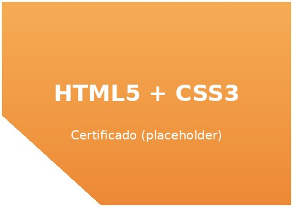
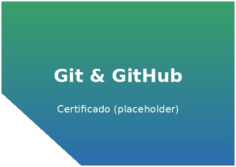

O meu Currículo
Formação académica
- Licenciatura em Informática — Universidade Licungo (2024 – presente)
- Ensino Médio Técnico em Informática — Instituto Técnico (2021 – 2023)
- Curso livre de Desenvolvimento Web Front-End — plataforma online (2023)
Experiência
- Estágio académico em suporte técnico e manutenção de laboratórios de informática (2024)
- Desenvolvimento de pequenos projetos pessoais em HTML, CSS e lógica de programação
- Voluntariado em alfabetização digital para colegas da comunidade académica
Competências técnicas
- HTML5 semântico e acessibilidade web
- CSS3 (Flexbox, Grid, variáveis, animações)
- Lógica de programação e estruturas de dados básicas
- Controlo de versões com Git e GitHub
| Tecnologia | Nível | Anos de prática | Observações |
|---|---|---|---|
| HTML5 | Avançado | 2 | Uso diário em projetos académicos |
| CSS3 | Avançado | 2 | |
| JavaScript | Básico | 1 | Em aprendizagem |
| Git / GitHub | Intermédio | 1 | Controlo de versões de projetos |
| Idiomas: Português (nativo), Inglês (intermédio) | Leitura de documentação técnica | ||
Certificados

